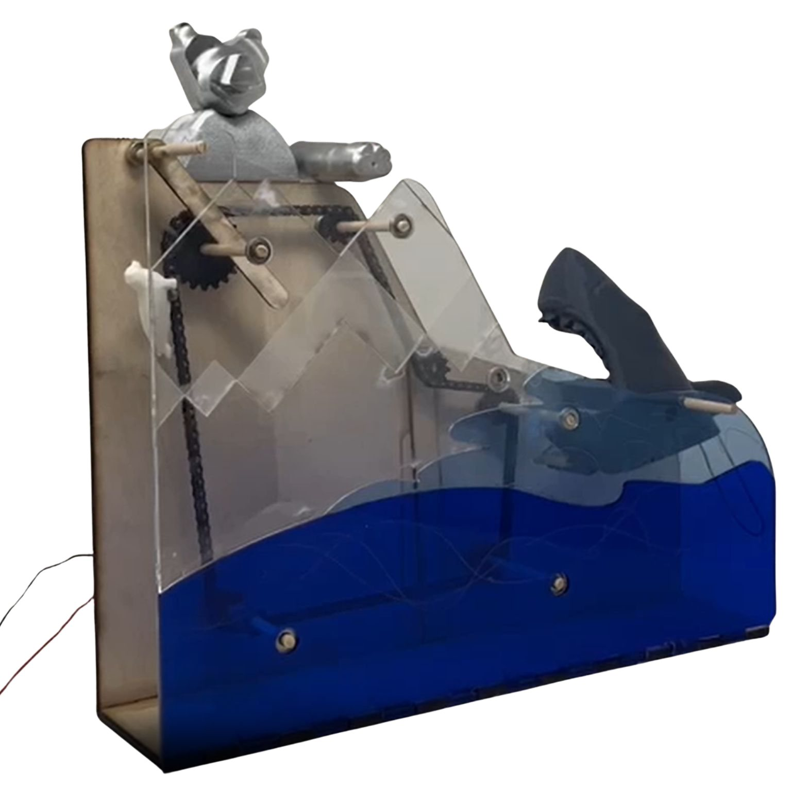
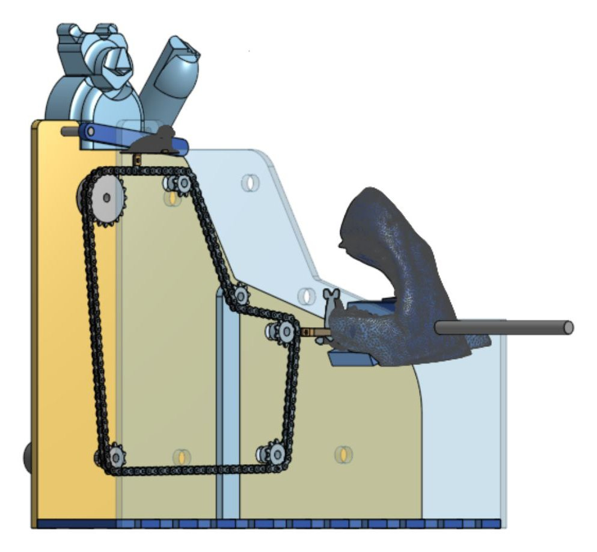
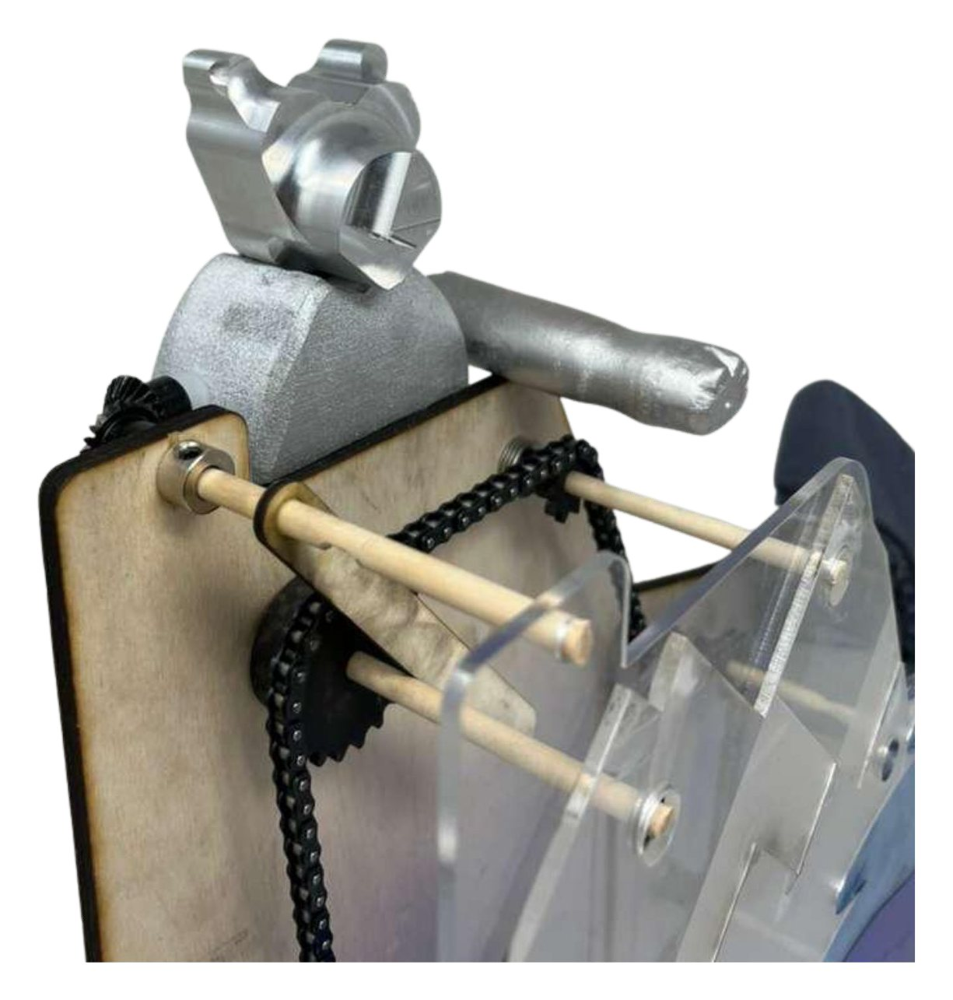

The Arctic Kinetic Sculpture
A seal, bear, and shark set in motion by chains, sprockets, and bevel gears.
Overview
The Arctic is a kinetic sculpture featuring a seal, a bear, and a shark, designed and fabricated from plywood, acrylic, PLA, and aluminum. The project explored advanced CAD techniques, a range of fabrication methods, chain and sprocket mechanics, and working as a team. [TODO: when and for which class, and who was on your team.]
My role
My goals were to expand my Onshape skills, fabricate a part on a CNC and improve my CAM skills, and work with interdependent mechanisms: bevel gears and a chain drive. [TODO: which parts of the sculpture you designed and built.]
Design & build
In Onshape I improved my part modeling and assembly skills and learned to use a Variable Studio and to model sheet metal.

I milled the bear head on the Tormach CNC mill, cut the L brackets on the plasma cutter and bent them on the sheet metal bender, and turned the bear arm on the wood lathe. In assembly I learned to work with chain and sprockets, including using a chain breaker and setting chain tension.

Challenges
- Smooth chain-driven motion. We carefully calibrated chain tension and selected durable sprockets, so the motion stayed consistent without slipping or binding.
- The shark head. Its movement was hard to simulate in CAD, which led to some interference. In assembly, we adjusted the head's angle and attachment to improve the visual effect and let the seal pass through cleanly, while keeping the mechanism working.
- The bear arm. To make it move accurately and reliably, we iterated the arm geometry and lever length in CAD, tested prototypes, and adjusted the pivot points for smooth, controlled motion.
Results
The final sculpture assembled smoothly, with well-tensioned chains and robust sprockets. The bear arm mechanism worked as intended, and the shark's head was adjusted to enhance the visual effect. [TODO: what you learned, or what you'd do differently.]